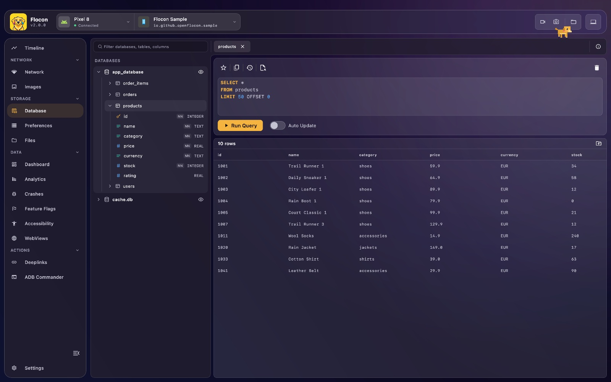
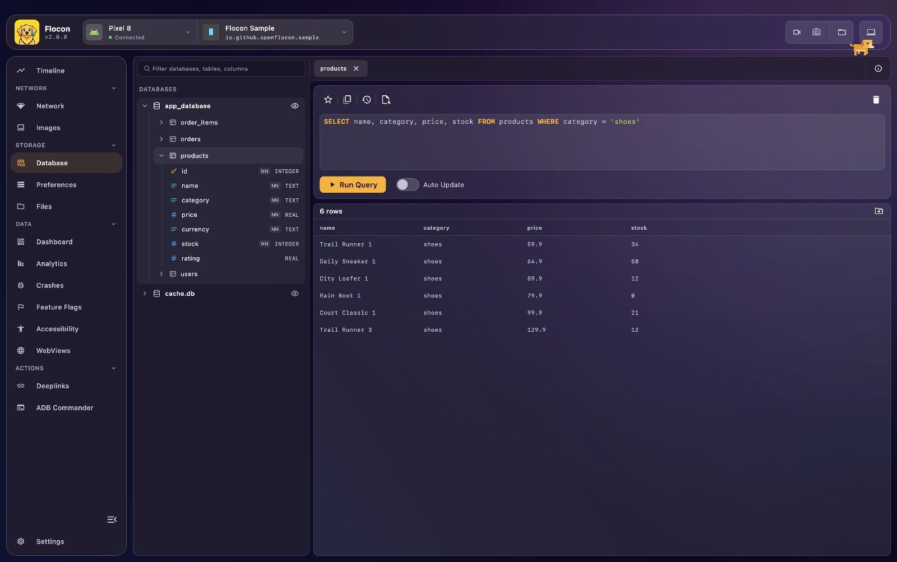
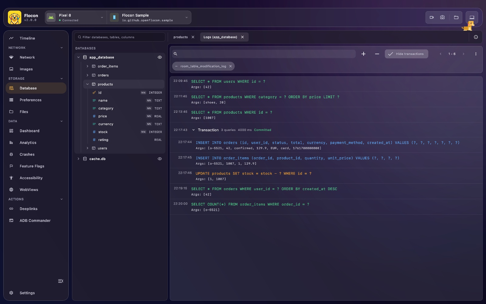

🧩 Database Explorer & SQL Editor
Flocon lists the SQLite databases of your app (Room, SQLDelight, Core Data stores, sqflite, plain SQLite files) and lets you browse their schema, run SQL queries on them from the desktop and see the queries your app runs, in real time. It helps you check what is really stored, test a query before writing it in code, and spot slow or unexpected queries.


Platform support
| Android | KMP (iOS / JVM / Wasm) | Swift (iOS / macOS) | Flutter | |
|---|---|---|---|---|
| Automatic detection of SQLite files | ✅ (with room()) |
✅ iOS (Documents, Library), JVM with room { path(...) }, ❌ Wasm |
✅ (Documents, Application Support) | ✅ (databases, documents, support folders) |
| Browse schema and run SQL | ✅ | ✅ (Wasm: Room 3 only) | ✅ | ✅ |
| Query logging | ✅ (Room, SQLDelight, manual) | ✅ (Room 3, SQLDelight, manual) | ✅ (manual) | ✅ (manual) |
| Transactions grouped in the logs | ✅ (Room) | ✅ (Room 3) | ❌ | ❌ |
- Wasm has no file system and no SQLite file: only Room 3 with
WebWorkerSQLiteDrivercan be registered. The SQLDelight web worker driver is not supported yet. - Swift and Flutter open the SQLite file itself, whatever library wrote it (Core Data, GRDB, SQLite.swift, Drift, sqflite...). A file is a database when it starts with the SQLite header, its extension does not matter.
- On every platform, only the listed databases can be queried.
Setup
Add the database core and the module matching your library (debug real module, release -no-op). Replace LAST_VERSION with the latest release, or use the BOM described in Kotlin SDK:
dependencies {
debugImplementation("io.github.openflocon:flocon-database-core:LAST_VERSION")
debugImplementation("io.github.openflocon:flocon-database-room:LAST_VERSION")
releaseImplementation("io.github.openflocon:flocon-database-core-no-op:LAST_VERSION")
releaseImplementation("io.github.openflocon:flocon-database-room-no-op:LAST_VERSION")
}
dependencies {
debugImplementation("io.github.openflocon:flocon-database-core:LAST_VERSION")
debugImplementation("io.github.openflocon:flocon-database-room3:LAST_VERSION")
releaseImplementation("io.github.openflocon:flocon-database-core-no-op:LAST_VERSION")
releaseImplementation("io.github.openflocon:flocon-database-room3-no-op:LAST_VERSION")
}
For Room, install the plugin. room() (from io.github.openflocon.flocon.database.room, or .room3) adds the Room provider:
For SQLDelight, or when you only register databases by hand, install(FloconDatabase) is enough.
The database feature is part of the Flocon product, there is nothing else to add. Install it with .database:
The SQLite files of Documents and Library/Application Support are listed without any registration, so Core Data stores, GRDB and SQLite.swift databases usually show up right away.
import 'package:flocon/flocon.dart';
import 'package:flocon_database/flocon_database.dart';
await startFlocon((flocon) => flocon..install(const FloconDatabase()));
The SQLite files of the databases folder (sqflite), the documents folder (Android, iOS and the macOS sandbox) and the application support folder are listed without any registration. Pass searchDirectories: to FloconDatabase to scan other folders.
Usage
Registering databases
Automatic detection. With room(), Flocon scans for SQLite database files: the app's databases folder on Android, Documents and Library on iOS. On JVM, give the folders to scan with room { path("/path/to/folder") }. Nothing is detected on Wasm.
Room databases (all platforms). To register a Room database (in-memory databases included) with a display name:
val dogDatabase = Room.inMemoryDatabaseBuilder(context, DogDatabase::class.java).build()
Flocon.databasePlugin.register(
id = "inmemory_dogs",
displayName = "In-Memory Dogs",
database = dogDatabase,
)
The id is required, stable and unique: registering two different databases with the same id throws an
IllegalArgumentException. It is the id the desktop app uses for everything on this database (browsing, queries,
query logs), so the query logs of a database must be sent with the same id (see Query logging).
register(id, displayName, database) comes from io.github.openflocon.flocon.database.room (Room 2) or io.github.openflocon.flocon.database.room3 (Room 3).
SQLDelight databases. SQLDelight drivers are plain objects, so the database is registered through its driver. withFlocon registers it
and shows its queries in the desktop app (see Query logging):
val driver = AndroidSqliteDriver(AppDatabase.Schema, context, "app.db")
.withFlocon(id = "app", displayName = "App database") // io.github.openflocon.flocon.database.sqldelight.withFlocon
val database = AppDatabase(driver)
It works with every driver (AndroidSqliteDriver, JdbcSqliteDriver, NativeSqliteDriver) and needs
install(FloconDatabase), with no provider: FloconDatabase itself is enough.
Same rules on id as for Room. To only browse the database, without the query logs, use
withFlocon(id, displayName, logQueries = false), or Flocon.databasePlugin.register(id, displayName, driver).
The SQL you run from the desktop app does not refresh the SQLDelight Flows of your app, and the column names
of PRAGMA and EXPLAIN results are column_0, column_1... The web worker driver is not supported yet.
Room 3 on the web (Wasm). Room 3 runs on Wasm with WebWorkerSQLiteDriver (androidx.sqlite:sqlite-web), which talks to a SQLite
Web Worker. There is no file system, so the databases are not discovered: register each Room database
with register(id, displayName, database) (the plugin still has to be installed with install(FloconDatabase) { room() }):
val dogDatabase = Room.databaseBuilder<DogDatabase>(name = "dogs.db")
.setDriver(WebWorkerSQLiteDriver(createWorker()))
.build()
Flocon.databasePlugin.register(id = "dogs", displayName = "dogs", database = dogDatabase)
See FloconAndroid/sample/wasm in the repository for a complete setup (worker, npm package and KSP for wasmJs).
SQLite files (Kotlin Multiplatform). Any SQLite file can be registered with its absolute path:
Register a database that is not in Documents or Application Support, or give one a clearer name. Either at install time:
let url = URL.documentsDirectory.appending(path: "app.sqlite")
#if DEBUG
startFlocon { flocon in
flocon.install(.database) {
$0.register(displayName: "App", url: url)
}
}
#endif
or later, once the SDK is started:
Flocon.databasePlugin.register(displayName: "Shared", url: sharedDatabaseURL)
Flocon.databasePlugin.register(displayName: "Shared", absolutePath: "/path/to/shared.sqlite")
Registering a file that is already listed renames it. Databases found automatically are named after their path from their root, such as Documents/app.sqlite.
The id of a database is the absolute path of its file (FloconDatabase(displayName:url:).id), the same whatever the way the path is written.
Register a database stored elsewhere, or give one a clearer name:
import 'package:flocon/flocon.dart';
import 'package:flocon_database/flocon_database.dart';
Flocon.database.register('Shared', '/path/to/shared.sqlite');
The plugin must be installed first (the call does nothing before). A database already listed is renamed.
Query logging
Flocon can display all SQL queries executed by your app in real time. It is great to verify the queries generated by Room or to detect slow multi-table joins.

The queries run in the same transaction are grouped in one row, with the number of queries, the duration and whether
the transaction was committed or rolled back. Click the row to show or hide its queries. Room 2 and Room 3 logging group
them automatically, and the transactions nested in a transaction (savepoints) get a row of their own inside it, which you can
fold too. A transaction of a single query is shown as a plain row. With manual logging, logQuery finds the transaction of a
query from the BEGIN, SAVEPOINT, COMMIT... statements you log before it.
val database = Room.databaseBuilder(
context.applicationContext,
DogDatabase::class.java,
"dogs_database"
)
.floconLogs(id = "dogs") // io.github.openflocon.flocon.database.room.extensions.floconLogs
.build()
.also { Flocon.databasePlugin.register(id = "dogs", displayName = "dogs", database = it) }
The id given to floconLogs must be the one the database is registered with, otherwise the desktop app
cannot show the queries with the database.
Room 3 has no query callback: wrap its SQLite driver instead.
Room.databaseBuilder<DogDatabase>(context, "dogs_database")
.setDriver(AndroidSQLiteDriver().floconLogs(id = "dogs")) // io.github.openflocon.flocon.database.room3.floconLogs
.build()
.also { Flocon.databasePlugin.register(id = "dogs", displayName = "dogs", database = it) }
Wraps a synchronous driver (BundledSQLiteDriver, NativeSQLiteDriver, AndroidSQLiteDriver...), checked on Android with AndroidSQLiteDriver. Each statement
is logged when it runs, with its arguments. Same rule as Room 2: the id is the one the database is registered with.
val driver = AndroidSqliteDriver(AppDatabase.Schema, context, "app.db")
.floconLogs(id = "app") // io.github.openflocon.flocon.database.sqldelight.floconLogs
withFlocon does this and registers the database. Each query is logged once, when it is done, with its arguments
(blobs are shown as their size). Failing queries are logged too. Unlike Room, the transactions are not grouped yet.
Flocon.databasePlugin.logQuery(
dbId = "my_custom_db", // the id the database was registered with
sqlQuery = "SELECT * FROM users WHERE id = ?",
bindArgs = listOf(42),
)
Room only accepts one query callback per database. If your app already sets its own
setQueryCallback, call logQuery from it to forward the queries to Flocon:
The SDK does not hook into Core Data, GRDB or SQLite.swift: call logQuery from the place where your app runs a statement (a trace callback, your own database wrapper...).
// by file location
Flocon.databasePlugin.logQuery(
database: databaseURL,
sqlQuery: "SELECT * FROM users WHERE id = ?",
bindArgs: [42]
)
// or by id, the one of the registered database
Flocon.databasePlugin.logQuery(dbId: database.id, sqlQuery: "DELETE FROM users")
bindArgs is [Any?], a nil value is shown as null. The queries are linked to a database by its file, so they show up under it in the desktop app.
flocon_database browses and queries databases with sqflite, which has no query hook: log the queries from the hook of your database library. A query is linked to its database by the path of its file.
import 'package:flocon/flocon.dart';
import 'package:flocon_database/flocon_database.dart';
Flocon.database.logQuery(db.path, 'SELECT * FROM users WHERE id = ?', [42]);
For example with Drift, from a QueryInterceptor:
class FloconQueryInterceptor extends QueryInterceptor {
FloconQueryInterceptor(this.path);
final String path;
@override
Future<List<Map<String, Object?>>> runSelect(QueryExecutor e, String statement, List<Object?> args) {
Flocon.database.logQuery(path, statement, args);
return super.runSelect(e, statement, args);
}
// same for runInsert, runUpdate, runDelete, runCustom
}
In Flocon Desktop
In the Timeline
Logged queries also show up in the Timeline, in the Database lane of the graph.
- Sidebar: the databases of the app with their tables and columns (type, primary key, not null). Use the filter field to find a database, table or column, and double-click a table to open it.
- SQL editor: write a query and run it, the result is shown as a table. Open several tabs, turn on auto-update to re-run a query regularly, copy the result or export it to CSV.
- Row detail: select a row to see its values in full.
- Saved queries: save a query as a favorite from the editor and run it again later.
- Query logs: See all queries opens the queries your app ran on a database, newest first, with their arguments (you can copy the query or its arguments). The queries of a transaction are grouped in one row (count, duration, committed, rolled back or in progress).
Note
Queries from the desktop run on their own connection, next to the one of your app. With Flutter, blobs are shown in hexadecimal, truncated after 64 bytes.
With AI agents (MCP)
list_databases: the SQLite databases of the app, with thedatabaseIdused by the other tools.list_database_tables: the tables of a database with their columns, types and primary keys.query_database: run a read-only SQL query (SELECT,PRAGMAwithout a value,EXPLAIN).list_database_query_logs: the queries your app executed, newest first. Only available when the app logs its queries to Flocon (see Query logging).
Example prompts: "Show me the users table of the app database and tell me why two rows have the same email.", "Which queries did the app run when I opened the profile screen?"
See the MCP cookbook for full workflows.
Limitations
- Kotlin: SQL run from the desktop does not refresh your SQLDelight
Flows, and the web worker driver of SQLDelight is not supported. - Wasm: no SQLite files, only Room 3 with
WebWorkerSQLiteDriver. - Swift and Flutter: queries are logged by hand, and transactions are not grouped.
- The MCP tools only run read-only queries.